RP(Regulated Phase )方式
フォステクスが自社の「動電型全面駆動方式」につけた名称。
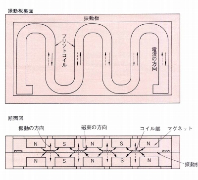
動電型全面駆動方式は、振動板とコイルを一体化し、コンデンサー型ヘッドフォンと同様に振動板を全面駆動する方式で、「分割振動」の除去による歪みの少ない方式です。同社のカタログには特許申請中と記述があるのでオリジナル技術ということなのでしょう。
RP方式の特徴は、
�@他社の動電型全面駆動方式がコイルを振動板上で同心円状に展開するのに対し、ジグザクに蛇行させること
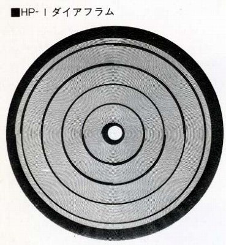 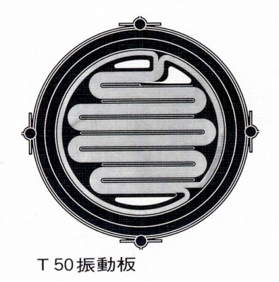 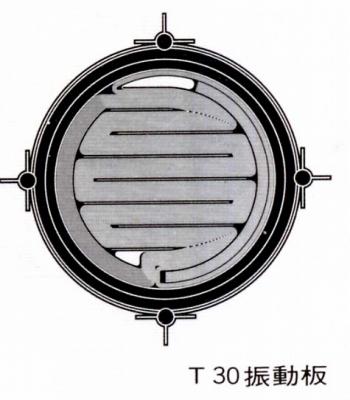
�A他社の動電型全面駆動方式が複数の穴が開いた円盤状の磁石を使用するのに対し、複数の棒状の磁石を使用すること です。
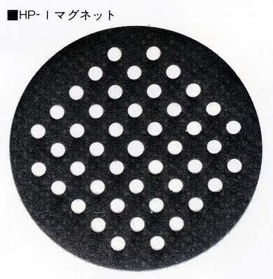
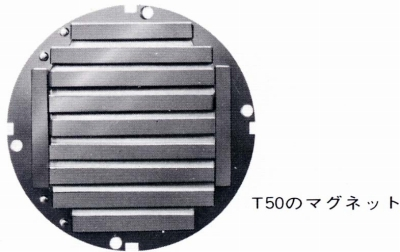
�@の特徴は、振動板が必ずしも円形でなくともいいことを意味します。同じ全面駆動方式のコンデンサー型（静電型全面駆動方式）ではソニーは不等辺五角形、コスのESP/10はほぼ四角い形状の振動板を採用していました。現行のスタックスのSR-404は楕円型の振動板です。
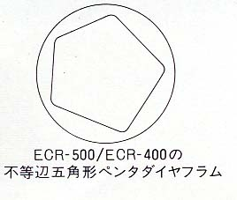
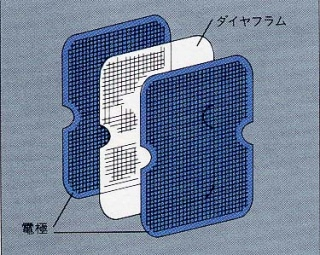
（左がソニーコンデンサー型の振動板、右がコスESP/10の振動板）
�Aの特徴は、磁石の素材に対する自由度が大きいようです。ヤマハのHP-1000のカタログによると、動電型全面駆動方式がはやった1970年代半ばの時点では、希土系磁石であるコバルト磁石では、粉末の状態で保磁力がフェライト磁石より大きく、また酸化されやすい為、プレス成形が非常に困難だったらしいのです。ヘッドフォンに使用する磁石は後加工が原則的にできない焼結磁石ですから、これが動作原理的に優れた動電型全面駆動方式がサマリウムコバルト磁石が導入されるようになった1970年代末に急速に廃れた原因の一つではないかと思います。
�@、�Aの特徴を生かしたのが、フォステクスの現行モデル、T50RPです。T50RPでは振動板はほぼ正方形ですし、磁石はネオジウムを採用しています。
・他社ヘッドフォンへの使用
1970年代中盤から1980年代初頭に各社が展開した動電全面駆動型ヘッドフォンの中にはRP方式によるものがあるようです。現在確認できたのはアイワのHP-500とトリオ（現 ケンウッド）のKH-85はRP方式のヘッドフォンです。
・ヘッドフォン以外への使用
フォステクスはＲＰ方式の応用範囲として、ヘッドフォン以外にスコーカー、ツィーター、マイクロフォンなどをあげていました。スコーカーの単体商品については確認できませんが、ツィーターについては単体のスピーカーユニットとして販売していました。また自社ブランドのスピーカーにも採用していました。
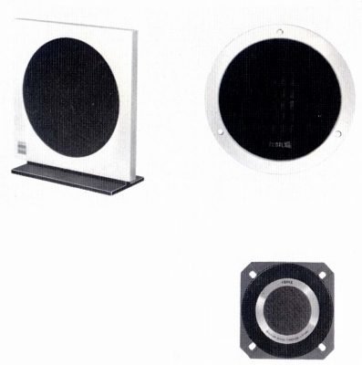
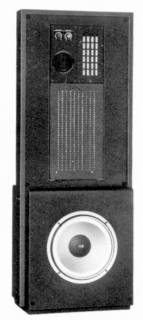
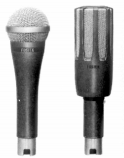
（左 77年4月カタログに掲載のツィーター。 中央 1980年代の最高級システム GZ2000 右 マイク M55RPとM77RP)
現在では、フォステクスブランドのユニットでの販売は終わっているようですが、本体のフォスター電機のOEM供給用としては残っているようです。